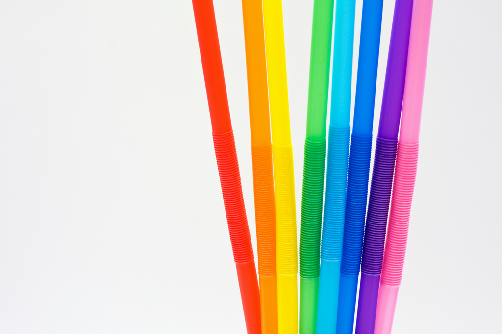
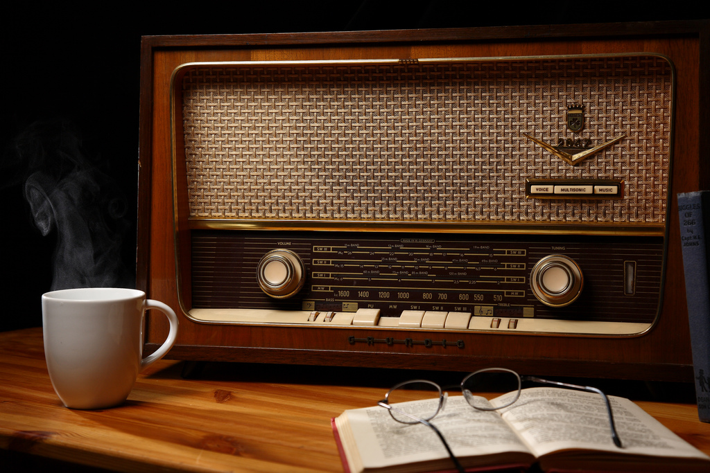
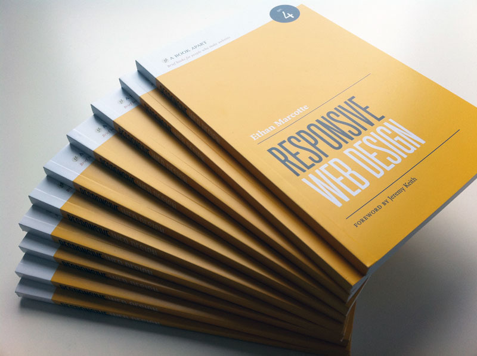
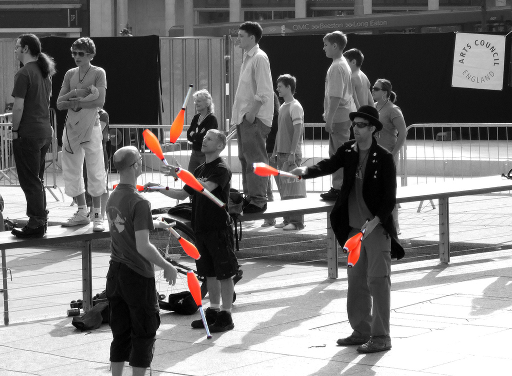

Responsive Web Design
Eivind Uggedal
—
@uggedal
Bekk Consulting
20. september 2011
Eivind Uggedal
—
@uggedal
Bekk Consulting
20. september 2011
Har du erfaring med HTML?
Har du stilgitt HTML sider med CSS?
Har du brukt CSS3 egenskaper for stiling?
(box-shadow,
border-radius,
animation etc.)
TODO: lage iPhone, iPad ramme i med css bakgrunn på bilde. TODO: bilde av side med overflow i iPhone og iPad skall.
TODO: bilde av responsiv side i i iPhone, iPad og iMac skall.
Ikke design for mobil.
Fleksibel og device-uavhengig design.
TODO: kode, eksempel
TODO: kode, eksempel TODO: båndbredde


<link rel="stylesheet" media="screen" href="/screen.css"> <link rel="stylesheet" media="print" href="/print.css">
@media screen {
body {
background: #000;
color: #fff;
}
}
@media print {
body {
background: #fff;
color: #000;
}
}
<link rel="stylesheet" media="screen and (min-width: 1024px)"
href="/desktop.css">
<link rel="stylesheet" media="screen and (max-width: 480px)"
href="/mobile.css">
@media screen and (min-width: 1024px) {
body {
font-size: 1.25em;
}
}
@media print and (max-width: 480px) {
body {
font-size: .8em;
}
}
TODO: eksempel TODO: kode
<meta name="viewport" content="width=device-width">
TODO: kode, eksempel
TODO: list browsers TODO: list mobile devices exluded TODO: fallback or js solution

TODO: http://twitter.com/#!/TheNextWeb/status/48649111787929600 TODO: http://twitter.com/#!/khoi/status/53436356113858560 TODO: http://twitter.com/#!/zeldman/status/101394540849668096 TODO: paste geckoboard image

TODO: examples
